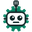
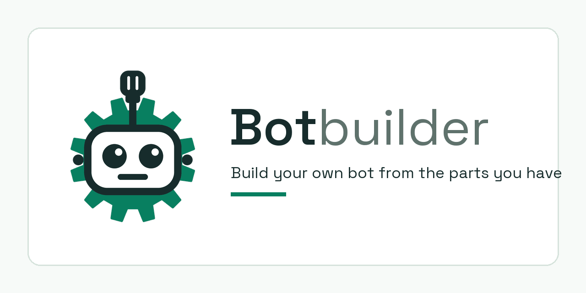

Botbuilder logo
Colour, on light
16 px
32 px
64 px
256 px
One colour (currentColor), on dark
16 px
32 px
64 px
256 px
With the word, and the PNG files
logo.svg, live text

favicon-32.png
apple-touch-icon.png at half size

social-preview.png at quarter size